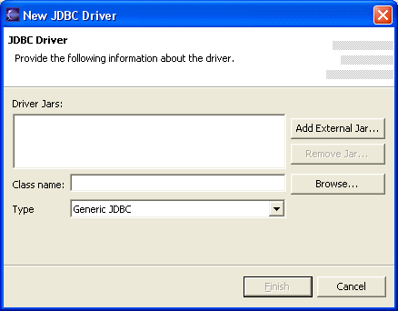

QuantumDB uses standard JDBC Drivers to access databases. The first step in
setting up a database bookmark is, therefore, selecting a JDBC Driver. A JDBC
Driver is usually one file, although some databases have drivers composed of
several files. You have to find the file and select it. Usually the file is
a .jar or .zip file that is located in some directory
of your database, usually called jdbc. Sometimes you'll have to
separately download the JDBC drivers needed for your database. Usually a database
has more than one driver, differing in capabilities, or from completely different
vendors.
The image below shows a "New Bookmark" page with several JDBC drivers defined. The first time you try to configure a bookmark, QuantumDB will already recognize one driver: the standard JDBC-ODBC driver provided with the Java Runtime Environment. If you have ODBC connections already defined, you can use this driver to connect to them. If not, you need to find your database's driver and add it to the list of drivers using the "Add driver..." Button.

(Note: You have the possibility of deleting the drivers that you have but don't use, selecting the driver and clicking on the "Delete driver" button. You won't be allowed to delete a driver that is used in a bookmark. Delete first the bookmark if you aren't using it.)
Select the "Add Driver..." button to choose an alternate driver.

Press the Add External Jar (it could be other extension, but usually is a jar file), and navigate your file system to select the file that contains the JDBC driver. If your driver has more than one file, add all the needed files in this dialog.
Once you specify the .jar locations, you can use the "Browse..." button beside the class name field to select valid driver class names. Sometimes drivers have several possible classes to select. You'll have to refer to the driver documentation to know about the different capabilities of each one. If no class to select appears when you hit the Browse button, most likely the file you selected is not a JDBC driver, or not the main one if you have several files.
Finally, the Add Driver Wizard asks for a database type. If you're setting up a fairly standard driver (such as, for example, the standard Oracle or DB2 driver), QuantumDB will probably recognize the driver class name and select the appropriate driver from the list. Otherwise, choose the corresponding database type or, if your database type isn't listed, select "Generic JDBC". If your database is listed but your driver not, write to the Quantum Forum so that it'll be recognized in the future.
The database type helps QuantumDB provide defaults for later parts of the bookmark set-up process, and also tells the plugin how to support some of the non-standard database features (such as sequences). In general is best to select the right database type, even if the "Generic" type will work for most of the functions.